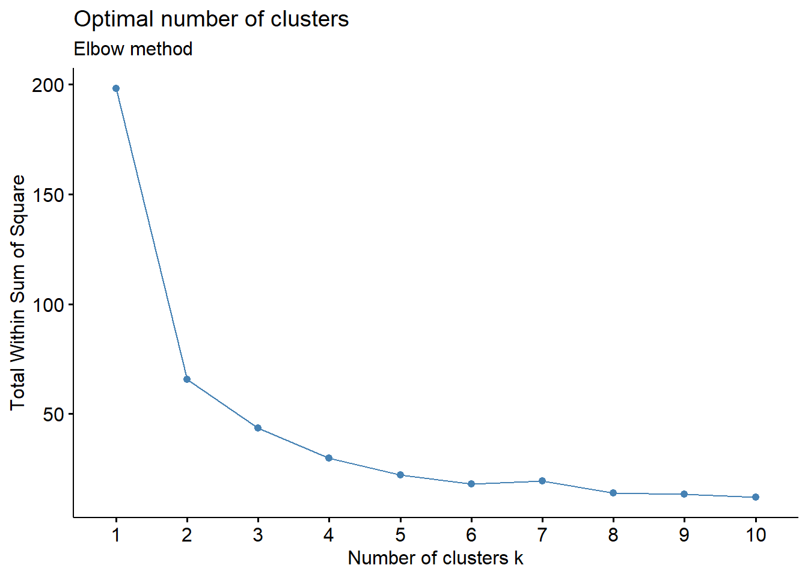
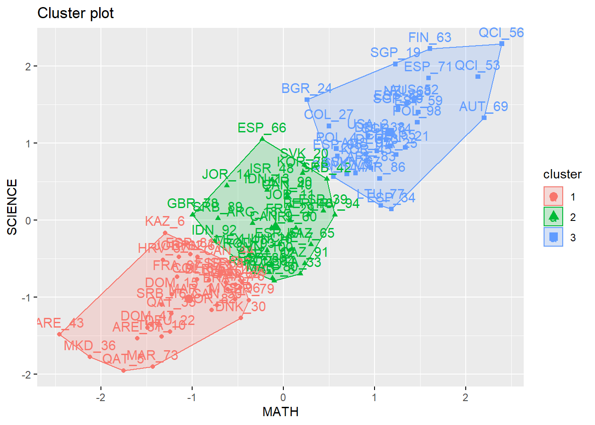

Process
Importing necessary packages for this project:
About the learningtower package:
The Programme for International Student Assessment (PISA) is a global study conducted by the Organization for Economic Cooperation and Development (OECD) in member and non-member countries to assess educational systems by assessing 15-year-old school students academic performance in mathematics, science, and reading. This datasets contains information on their scores and other socioeconomic characteristics, information about their school and its infrastructure, as well as the countries that are taking part in the program.
library(learningtower)About the dplyr package:
A fast, consistent tool for working with data frame like objects, both in memory and out of memory.
library(dplyr)About the tidyr package:
Tools to help to create tidy data, where each column is a variable, each row is an observation, and each cell contains a single value. ‘tidyr’ contains tools for changing the shape (pivoting) and hierarchy (nesting and ‘unnesting’) of a dataset, turning deeply nested lists into rectangular data frames (‘rectangling’), and extracting values out of string columns. It also includes tools for working with missing values (both implicit and explicit).
library(tidyr)About the reactable package:
Interactive data tables for R, based on the ‘React Table’ JavaScript library. Provides an HTML widget that can be used in ‘R Markdown’ documents and ‘Shiny’ applications, or viewed from an R console.
library(reactable)library(writexl)
library(factoextra)Do note that some of the rows are omitted due to the sheer size of the data frame
Loading PISA 2018 result dataset
# We'll be naming the data frame stud_perf_2018
stud_perf_2018 <- load_student(2018)
# Since we only wanted to grab the PISA 2018 result we passed 2018 as argument to the load_student function provided by the learningtower packageHere’s a table view of the entire PISA 2018 dataset:
# RESERVED FOR FINAL
# DO NOT UNCOMMENT YET!
# reactable(stud_perf_2018)
stud_perf_2018## # A tibble: 612,004 x 22
## year country school_id student_id mother_educ father_educ gender computer
## <fct> <fct> <fct> <fct> <fct> <fct> <fct> <fct>
## 1 2018 ALB 800002 800251 ISCED 3A ISCED 3A male yes
## 2 2018 ALB 800002 800402 ISCED 2 ISCED 2 male yes
## 3 2018 ALB 800002 801902 ISCED 2 ISCED 2 female no
## 4 2018 ALB 800002 803546 ISCED 2 ISCED 2 male no
## 5 2018 ALB 800002 804776 ISCED 2 ISCED 3A male yes
## 6 2018 ALB 800002 804825 ISCED 2 ISCED 2 female yes
## 7 2018 ALB 800002 804983 <NA> <NA> female <NA>
## 8 2018 ALB 800002 805287 ISCED 2 ISCED 2 male no
## 9 2018 ALB 800002 805601 ISCED 2 ISCED 2 female yes
## 10 2018 ALB 800002 806295 <NA> <NA> female <NA>
## # ... with 611,994 more rows, and 14 more variables: internet <fct>,
## # math <dbl>, read <dbl>, science <dbl>, stu_wgt <dbl>, desk <fct>,
## # room <fct>, dishwasher <fct>, television <fct>, computer_n <fct>,
## # car <fct>, book <fct>, wealth <dbl>, escs <dbl>Here’s some information about the dataset
# The class of our data
class(stud_perf_2018)## [1] "tbl_df" "tbl" "data.frame"# Total number of rows and columns in the stud_perf_2018 dataset
dim(stud_perf_2018)## [1] 612004 22Here’s the different columns in the dataset
table(colnames(stud_perf_2018))##
## book car computer computer_n country desk
## 1 1 1 1 1 1
## dishwasher escs father_educ gender internet math
## 1 1 1 1 1 1
## mother_educ read room school_id science stu_wgt
## 1 1 1 1 1 1
## student_id television wealth year
## 1 1 1 1Here’s the overall summary statistic for all the columns in stud_perf_2018 dataset:
# Assigning some variables
overall_sum <- summary(stud_perf_2018)
math_sum <- summary(stud_perf_2018$math)
science_sum <- summary(stud_perf_2018$science)
# Overall
overall_sum## year country school_id student_id
## 2000: 0 ESP : 35943 63400008: 491 10000002: 1
## 2003: 0 CAN : 22653 49900054: 423 10000005: 1
## 2006: 0 KAZ : 19507 63400054: 349 10000006: 1
## 2009: 0 ARE : 19277 49900020: 323 10000007: 1
## 2012: 0 AUS : 14273 49900014: 320 10000009: 1
## 2015: 0 QAT : 13828 9600014 : 314 10000010: 1
## 2018:612004 (Other):486523 (Other) :609784 (Other) :611998
## mother_educ father_educ gender
## ISCED 1 : 34557 ISCED 1 : 35046 female:304958
## ISCED 2 :100956 ISCED 2 :100865 male :307044
## ISCED 3A :319865 ISCED 3A :291768 NA's : 2
## ISCED 3B, C :113304 ISCED 3B, C :130423
## less than ISCED1: 18055 less than ISCED1: 17988
## NA's : 25267 NA's : 35914
##
## computer internet math read science
## no :105710 no : 49703 Min. : 24.74 Min. : 0.0 Min. : 58.74
## yes :486324 yes :543010 1st Qu.:386.66 1st Qu.:375.5 1st Qu.:385.60
## NA's: 19970 NA's: 19291 Median :460.66 Median :453.3 Median :458.20
## Mean :461.22 Mean :454.4 Mean :460.69
## 3rd Qu.:535.28 3rd Qu.:532.2 3rd Qu.:533.44
## Max. :888.06 Max. :887.7 Max. :886.08
## NA's :5377 NA's :41320 NA's :5377
## stu_wgt desk room dishwasher television
## Min. : 1.000 no : 68513 no :108901 no : 0 0 : 11304
## 1st Qu.: 4.946 yes :523492 yes :478520 yes : 0 1 :158958
## Median : 11.133 NA's: 19999 NA's: 24583 NA's:612004 2 :199649
## Mean : 46.857 3+ :223022
## 3rd Qu.: 43.973 NA's: 19071
## Max. :2946.134
##
## computer_n car book wealth escs
## 0 : 74357 0 :108424 26-100 :169222 Min. :-7.546 Min. :-8.173
## 1 :176453 1 :197311 0-10 :125583 1st Qu.:-1.135 1st Qu.:-1.010
## 2 :164784 2 :173190 11-25 :124194 Median :-0.371 Median :-0.188
## 3+ :176886 3+ : 95485 101-200: 84750 Mean :-0.432 Mean :-0.281
## NA's: 19524 NA's: 37594 201-500: 59168 3rd Qu.: 0.322 3rd Qu.: 0.594
## (Other): 33441 Max. : 4.753 Max. : 4.205
## NA's : 15646 NA's :13737 NA's :14379Math and Science statistic summaries:
# Mathematics
math_sum## Min. 1st Qu. Median Mean 3rd Qu. Max. NA's
## 24.74 386.66 460.66 461.22 535.28 888.06 5377# Science
science_sum## Min. 1st Qu. Median Mean 3rd Qu. Max. NA's
## 58.74 385.60 458.20 460.69 533.44 886.08 5377Visual Exploratory Analysis
Extracting math and science scores and assigning them in variables math_perf_2018 and sci_perf_2018
math_perf_2018 <- stud_perf_2018$math
sci_perf_2018 <- stud_perf_2018$scienceHistogram: Math
hist(math_perf_2018)
Histogram: Science
hist(sci_perf_2018)
RESULT: Normal distribution for both Math and Science performance
Boxplot: Math
boxplot(math_perf_2018)
Boxplot: Science
boxplot(sci_perf_2018)Data Cleaning
TODO:
- Rename all columns in the data to UPPERCASE
- Remove all missing values from nominal variables
-
Remove the
readcolumn -
Recompute the
stu_wgtcolumn withreadcolumn removed
Separating Student Profile and Student Performance
Cleaning Student’s Profile:
Getting only significant columns from the data-set
ID<-stud_perf_2018$student_id
GENDER<-stud_perf_2018$gender
COUNTRY<-stud_perf_2018$country
SCHOOL<-stud_perf_2018$school_id
N_COMPUTER<-stud_perf_2018$computer_n
N_TV<-stud_perf_2018$television
HAS_COMPUTER<-stud_perf_2018$computer
HAS_DESK<-stud_perf_2018$desk
HAS_DISHWASHER<-stud_perf_2018$dishwasher
HAS_ROOM<-stud_perf_2018$room
HAS_INTERNET<-stud_perf_2018$internet
EDU_MOTHER<-stud_perf_2018$mother_educ
EDU_FATHER<-stud_perf_2018$father_educ
MATH <- stud_perf_2018$math
SCIENCE <- stud_perf_2018$science
WEALTH <- stud_perf_2018$wealth
# Building student_profile dataframe
student_profile = data.frame(
ID,
GENDER,
COUNTRY,
SCHOOL,
N_COMPUTER,
N_TV,
HAS_ROOM,
HAS_DESK,
HAS_COMPUTER,
HAS_INTERNET,
EDU_FATHER,
EDU_MOTHER,
WEALTH
)
student_grades = data.frame(
ID,
COUNTRY,
WEALTH,
N_COMPUTER,
MATH,
SCIENCE
)
# Eliminate rows with missing values from the entire student_profile dataframe and creating a new data frame
clean_df<-na.omit(student_profile)
clean_grade_df<-na.omit(student_grades)
# It is important to note that we removed the HAS_DISHWASHER column since it basically had nothing but padded NA values so we didn't include it in the new student_profile
# Student Profile Table
# reactable(clean_df)
# Student Grades
# reactable(clean_grade_df)
# Summarizing new clean_student_profile data frame
gender_sum <- summary(clean_df$GENDER)
computer_sum <-summary(clean_df$N_COMPUTER)
tv_sum <- summary(clean_df$N_TV)
h_room_sum <- summary(clean_df$HAS_ROOM)
h_desk_sum <- summary(clean_df$HAS_DESK)
h_computer_sum <- summary(clean_df$HAS_COMPUTER)
h_internet_sum <- summary(clean_df$HAS_INTERNET)
father_sum <- summary(clean_df$EDU_FATHER)
mother_sum <- summary(clean_df$EDU_MOTHER)
wealth_sum <- summary(clean_df$WEALTH)
# Output:
gender_sum## female male
## 272958 269319computer_sum## 0 1 2 3+
## 65791 161053 152058 163375tv_sum## 0 1 2 3+
## 9207 145409 183960 203701h_room_sum## no yes
## 100030 442247h_desk_sum## no yes
## 61012 481265h_computer_sum## no yes
## 95563 446714h_internet_sum## no yes
## 44792 497485father_sum## ISCED 1 ISCED 2 ISCED 3A ISCED 3B, C
## 32226 94408 275962 123516
## less than ISCED1
## 16165mother_sum## ISCED 1 ISCED 2 ISCED 3A ISCED 3B, C
## 31203 91983 298088 105048
## less than ISCED1
## 15955Setting up for K-Means Algorithm Testing
# Initializing Data
# Random sampling of Data from clean_grade dataframe
# Since my computer couldn't handle 500k+ data
sampled_clean_grade_df <- sample_n(clean_grade_df, 100)
hist(sampled_clean_grade_df$MATH)
sampled_clean_grade_df.MATH <- sampled_clean_grade_df$MATH
table(sampled_clean_grade_df.MATH)## sampled_clean_grade_df.MATH
## 180.86 217.844 258.163 274.809 286.916 293.38 303.685 304.056 305.197 307.901
## 1 1 1 1 1 1 1 1 1 1
## 313.933 315.658 316.136 322.55 324.291 338.509 338.812 340.739 346.378 346.711
## 1 1 1 1 1 1 1 1 1 1
## 360.793 363.869 367.295 370.066 371.08 373.562 380.731 381.846 382.894 384.812
## 1 1 1 1 1 1 1 1 1 1
## 384.982 391.93 392.402 398.25 398.574 398.759 400.539 408.256 408.582 412.973
## 1 1 1 1 1 1 1 1 1 1
## 414.935 424.161 424.37 427.758 430.403 430.497 432.788 435.713 435.719 435.842
## 1 1 1 1 1 1 1 1 1 1
## 436.569 438.599 445.212 454.01 454.322 457.905 458.436 460.093 464.632 470.072
## 1 1 1 1 1 1 1 1 1 1
## 472.573 475.086 475.227 478.287 479.653 482.862 497.545 502.031 504.597 510.046
## 1 1 1 1 1 1 1 1 1 1
## 511.516 513.452 514.636 526.052 536.432 548.705 549.181 551.268 555.06 562.076
## 1 1 1 1 1 1 1 1 1 1
## 565.519 565.857 566.94 573.491 578.316 579.552 584.374 585.434 587.447 587.477
## 1 1 1 1 1 1 1 1 1 1
## 596.31 598.749 606.668 610.516 611.742 624.069 625.837 683.33 690.787 712.068
## 1 1 1 1 1 1 1 1 1 1# Excluding Factor observations
grade_data <- sampled_clean_grade_df[5:6]
# Scaling Data
grade_data_scale <- scale(grade_data)
# Calculating Distance (Euclidean)
grade_data <- dist(grade_data_scale)
# Calculating number of Clusters needed
fviz_nbclust(grade_data_scale, kmeans, method="wss") + labs(subtitle = "Elbow method")
K-Means Algorithm Testing
km.out <- kmeans(grade_data_scale, centers = 3, nstart = 100)
print(km.out)## K-means clustering with 3 clusters of sizes 33, 35, 32
##
## Cluster means:
## MATH SCIENCE
## 1 -1.04046472 -1.01355798
## 2 -0.08729974 -0.09014186
## 3 1.16846333 1.14382432
##
## Clustering vector:
## [1] 1 3 3 3 1 1 2 2 2 1 2 2 2 2 1 1 3 2 3 2 3 1 2 3 3 2 3 2 2 1 1 1 2 3 1 1 1
## [38] 3 2 2 2 2 1 1 3 2 1 2 1 1 2 3 3 1 3 3 1 1 3 2 1 1 3 1 2 2 3 3 3 3 3 3 1 3
## [75] 1 1 3 2 1 2 1 1 3 2 2 3 1 1 2 2 2 2 2 2 3 1 3 3 3 2
##
## Within cluster sum of squares by cluster:
## [1] 13.97049 11.97529 16.32098
## (between_SS / total_SS = 78.7 %)
##
## Available components:
##
## [1] "cluster" "centers" "totss" "withinss" "tot.withinss"
## [6] "betweenss" "size" "iter" "ifault"km.clusters <- km.out$cluster
rownames(grade_data_scale) <- paste(sampled_clean_grade_df$COUNTRY, 1:dim(sampled_clean_grade_df)[1], sep = '_')
# Visualizing the Cluster
fviz_cluster(list(data=grade_data_scale, cluster = km.clusters))